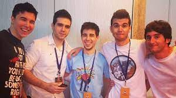
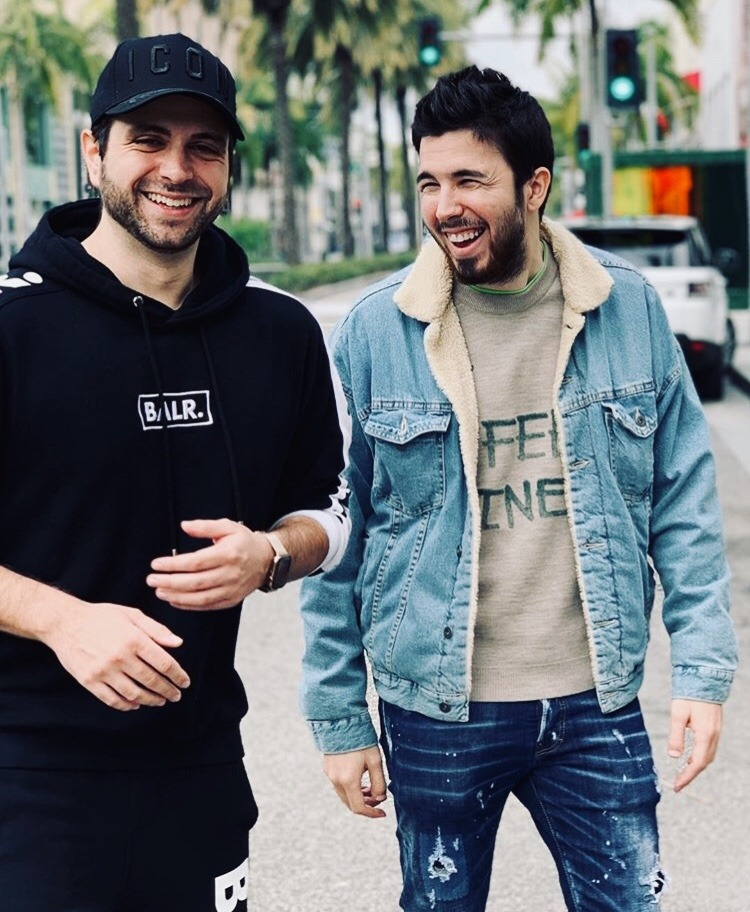

¿Quíenes crearon karmaland?
Premisa
Nos remontamos a 2014, donde comenzo la aclamada serie transmitida en youtube con unicamente 5 participantes, Vegetta777, Willyrex, Alexby11, ByStaxx y Luzugames.La serie es idea y propiedad de Samuel De Luque, tambien llamado Vegetta777

Vegetta y Willy
Vegetta fue invitado a un evento de Machinima, tuvo unos problemas de papeleo y gracias a eso conoció al que se convertiría en su mejor amigo dentro del ámbito de YouTube, Willyrex,
el cual también subía a su canal un contenido parecido al de él, ambos empezarían a desarrollar una amistad.Años despues, en 2014, él junto a Willy, se mudarían a Los Ángeles, contando ya con 6.000.000 suscriptores. Sin embargo al tiempo de estar en Los Ángeles volverían a España.
En el año 2015, Vegetta y Willyrex escribieron su propio libro, aunque todavía no lo sabía, sería el primero de muchos.
